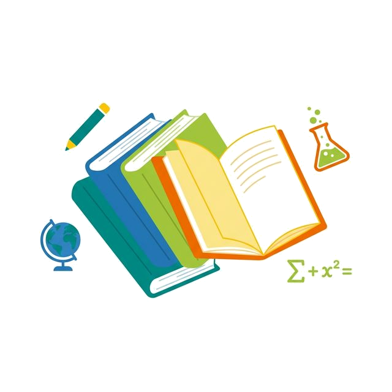

What We Build
한국어 기반 전과목
한국어 기반 전과목
기독교 교과과정
번역투가 아닌, 아이들의 정서와 언어에 맞는 자연스러운 교과 언어로 구성합니다.

01. Language
한국어 기반 교육
자연스러운 한국어 문장으로 학습 진입 장벽을 낮춥니다.
02. Subjects
전과목 확장성
국어, 수학, 사회, 과학 등 주요 교과에 가치의 관점을 연결합니다.
03. Context
다양한 교육 현장
기독교 학교, 대안 교육, 홈스쿨링 등 여러 환경에 대응합니다.
Roadmap
6년 여정, 한눈에 보는 성장 지도
카드는 흐름을 보여주고, 로드맵은 전체 구조를 빠르게 이해하게 합니다.
01
발견과 기초
1-2학년
02
관계와 확장
3-4학년
03
성숙과 적용
5-6학년
개발 현황 및 계획
| 출간 계획 | 과학 | 사회 | 수학 | 한국어 | 현황 |
|---|---|---|---|---|---|
| 2025년 2월 | 1학년 1학기 | 1학년 1학기 | - | - | 개발 완료 |
| 8월 | 1학년 2학기 | 1학년 2학기 | - | - | 개발 완료 |
| 2026년 2월 | 2학년 1학기 | 2학년 1학기 | 1학년 1학기 | - | 개발 중 |
| 8월 | 2학년 2학기 | 2학년 2학기 | 1학년 2학기 | - | - |
| 2027년 | 3학년 | 3학년 | 2학년 | 1학년 | - |
| 2028년 | 4학년 | 4학년 | 3학년 | 2학년 | - |
| 2029년 | 5학년 | 5학년 | 4학년 | 3학년 | - |
| 2030년 | 6학년 | 6학년 | 5학년 | 4학년 | - |
| 2031년 | - | - | 6학년 | 5학년, 6학년 | - |
교육과정의 실제 모습이 궁금하면 교재 미리보기에서 바로 이어서 읽을 수 있습니다.